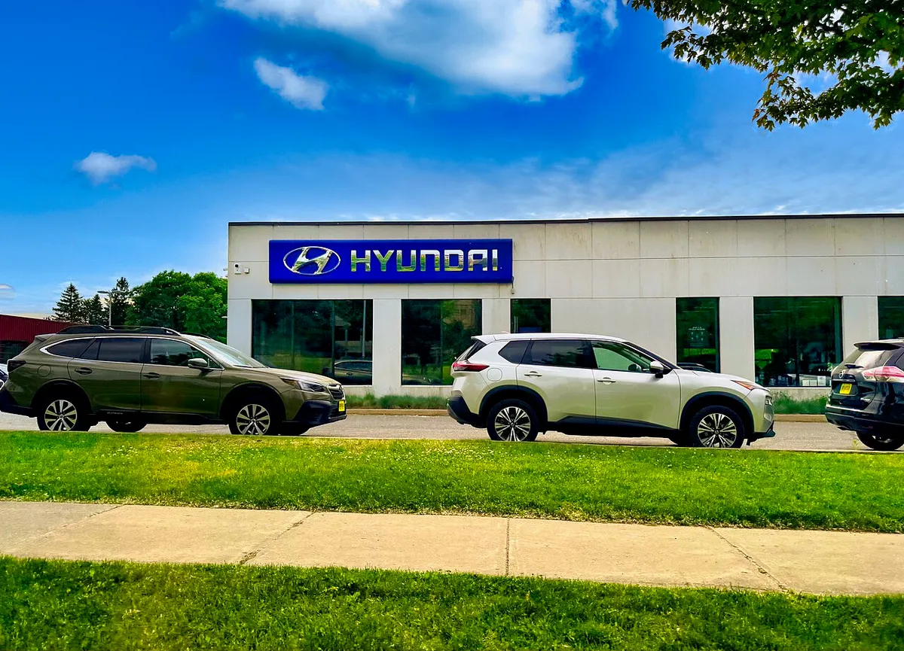
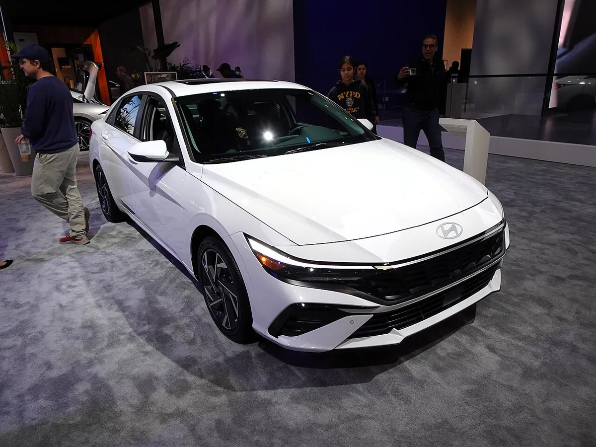
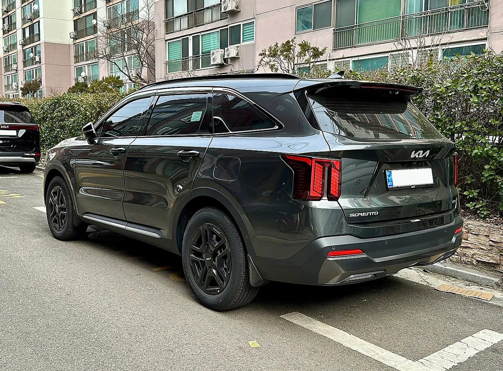
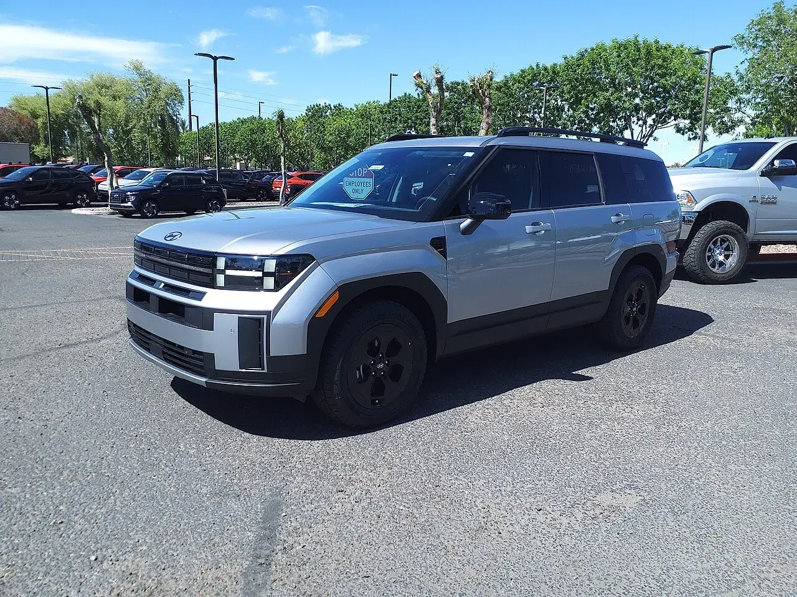
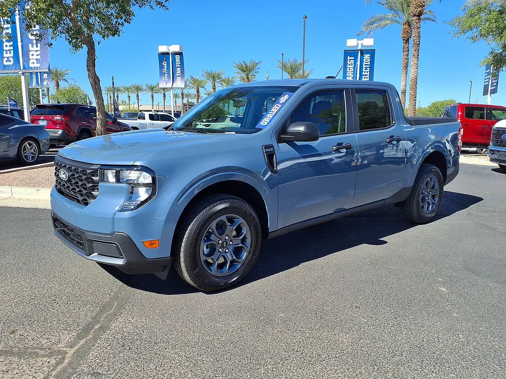
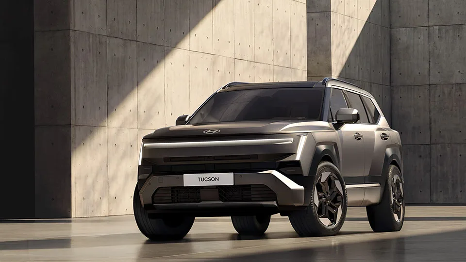

▲ 기아 스포티지 하이브리드. 하이브리드 수요가 현대차·기아의 미국 판매 방어를 이끈 것으로 분석된다 ⓒ Damian B Oh (Wikimedia Commons, CC BY-SA 4.0)
"포드를 두 달 연속 제쳤다." 현대차·기아가 미국 신차 시장에서 7월과 8월 연속으로 GM·토요타에 이어 점유율 3위에 올랐다는 소식이다. 한경비즈니스는 9월 30일 시장조사업체 옴디아 자료를 인용해 이 같은 내용을 보도했다. 이 글은 그 보도를 바탕으로 숫자가 실제로 무엇을 말하는지, 무엇이 아직 확정이 아닌지를 나눠 짚는다. 하이브리드 판매 자체는 전기차 세액공제 종료 여파를 다룬 기사에서 다뤘으니, 여기서는 점유율과 포드와의 격차에 초점을 맞춘다.
1. 7월과 8월, 무엇이 달라졌나
한경비즈니스에 따르면 7월 현대차·기아의 미국 판매는 16만 5,284대(전년 동월 대비 5.0% 증가)로, 점유율 12.1%를 기록해 GM(16.7%)·토요타(15.9%)에 이어 3위였다. 포드는 12.0%였다. 8월에는 미국 신차 시장 전체가 5.8% 줄어드는 가운데 현대차·기아는 0.6% 감소에 그친 17만 8,405대를 팔았고, 점유율은 12.9%까지 올랐다. 지난해 8월 기록했던 종전 최고치 12.2%를 1년 만에 넘어섰다.
핵심은 "덜 팔린 시장에서 덜 줄었다"는 점이다. 8월 판매량 자체는 전년보다 소폭 줄었지만, 시장이 더 크게 쪼그라들면서 점유율이 올라간 구조다. 판매가 폭발적으로 늘어서가 아니라는 점은 읽을 때 구분해야 한다.
▲ 기아 스포티지 하이브리드. 하이브리드 수요가 현대차·기아의 미국 판매 방어를 이끈 것으로 분석된다 ⓒ Damian B Oh (Wikimedia Commons, CC BY-SA 4.0)
| 구분 | 판매량 | 전년 동월 대비 | 점유율 | 순위 |
|---|---|---|---|---|
| 7월 | 165,284대 | +5.0% | 12.1% | 3위 (포드 12.0%) |
| 8월 | 178,405대 | -0.6% | 12.9% | 3위 (월간 최고치 경신) |
제목의 '두 달 연속'은 옴디아 집계의 7월과 8월 단월 순위를 뜻한다. 7월은 현대차·기아 12.1%, 포드 12.0%로 0.1%p 차이였다. 1~8월 누적 순위가 아니라는 점, 그리고 7월 격차는 1,751대에 불과했다는 점을 함께 봐야 한다.
📍 교차 확인 결과 — 현대차·기아 미국법인 발표와 대조
현대차·기아 미국법인의 8월 판매 발표를 합산하면 옴디아 수치와 정확히 일치한다. 현대차 브랜드 86,977대(-2%)에 제네시스 7,635대를 더한 94,612대, 여기에 기아 83,793대(+0.9%)를 더하면 178,405대다. 즉 옴디아의 '현대차·기아' 8월 수치에는 제네시스가 포함돼 있다. 국내 보도는 현대차 브랜드+제네시스 합산을 -1.9%로, 현대차 미국법인 보도자료는 현대차 브랜드를 -2%로 표기해 범위와 반올림 차이가 있다.
| 브랜드 | 판매량 | 전년 동월 대비 |
|---|---|---|
| 현대차 브랜드 | 86,977대 | -2% |
| 제네시스 | 7,635대 | -3.7% |
| 현대차 브랜드 + 제네시스 | 94,612대 | -1.9% |
| 기아 | 83,793대 | +0.9% (월간 역대 최고) |
| 합계 | 178,405대 | -0.6% |
현대차 미국법인 8월 보도자료는 PR Newswire 현대차 8월 판매 발표 바로가기에서 확인 가능하다. 제네시스 수치와 합산 178,405대는 서울경제 영문판 보도를 참고했다.

▲ 미국 버몬트주 버링턴의 현대 딜러십. 미국 판매는 이런 딜러 네트워크를 통해 월 단위로 집계된다 ⓒ Harrison Keely (Wikimedia Commons, CC BY 4.0)
2. 점유율 격차가 매달 0.1%p씩 줄었다
올해 들어 포드와의 누적 점유율 격차는 1~6월 0.6%p → 1~7월 0.5%p → 1~8월 0.4%p로 매달 0.1%p씩 좁혀졌다. 1~8월 누적으로는 현대차·기아가 11.8%(126만 4,072대), 포드가 12.2%(129만 9,420대)로, 판매량 차이는 3만 5,348대다. 월간 기준으로는 이미 앞섰지만 누적으로는 아직 뒤져 있다는 뜻이다.
| 기준 | 점유율 격차 | 판매량 격차 | 비고 |
|---|---|---|---|
| 1~6월 누적 | 0.6%p | - | 포드 우위 |
| 1~7월 누적 | 0.5%p | - | 포드 우위 |
| 1~8월 누적 | 0.4%p | 35,348대 | 현대차·기아 126만 4,072대 vs 포드 129만 9,420대 |
| 7월 단월 | 0.1%p | 1,751대 | 현대차·기아 우위 |
| 8월 단월 | 1.0%p | 14,042대 | 현대차·기아 우위 |
✔ 수치 확인 메모
7월 대비 8월 단월 판매 격차가 8배 넘게 벌어졌지만, 월 단위 3위는 누적 3위와 다른 이야기다. 누적 격차 3만 5,348대를 메우려면 남은 넉 달 동안 같은 흐름이 이어져야 한다. 한경비즈니스도 "연간 3위에 오를 수 있을 것으로 기대된다"고 썼을 뿐 확정이라고 하지 않았다.
3. 하이브리드가 끌었다 — 8월 5만 57대
한경비즈니스는 현대차·기아를 끌어올린 핵심으로 하이브리드를 꼽았다. 올해 1~8월 미국 신차 시장에서 하이브리드는 166만 358대로 20.7% 증가해 주요 파워트레인 가운데 유일하게 늘었다. 내연기관은 824만 3,564대로 2.9%, 전기차는 64만 8,350대로 26.8% 줄었다. 전기차 세액공제 종료와 유가 상승이 겹치며 소비자 관심이 하이브리드로 옮겨갔다는 분석이다.
| 파워트레인 | 판매량 | 증감 |
|---|---|---|
| 하이브리드 | 1,660,358대 | +20.7% |
| 내연기관 | 8,243,564대 | -2.9% |
| 전기차 | 648,350대 | -26.8% |
| 브랜드 | 판매량 | 전년 동월 대비 |
|---|---|---|
| 현대차 | 25,109대 | +33% |
| 기아 | 24,948대 | +65.7%(한경비즈니스 보도 기준. 기아 미국법인은 자체 집계로 하이브리드가 8월 99% 늘었다고 발표해 수치가 엇갈린다) |
| 합계 | 50,057대 | 처음 월 5만 대 돌파 |
현대차 미국법인은 8월 하이브리드가 현대차 브랜드 판매의 29%를 차지했다고 밝혔다(전동화 차량, 즉 하이브리드+전기차는 34%). 기아 하이브리드 24,948대를 기아 총판매 83,793대로 나눠 보면 약 30%인데, 이 비율은 원문에 없는 카프리즘의 단순 계산이다. 제네시스를 포함한 그룹 합계(178,405대) 대비로는 약 28%가 된다.
| 브랜드 | 차종 | 판매량 | 전년 동월 대비 |
|---|---|---|---|
| 현대 | 투싼 | 21,197대 | +18% (8월 최고 기록) |
| 현대 | 엘란트라 | 17,747대 | +16% |
| 현대 | 싼타페 | 13,512대 | +5% (8월 최고 기록) |
| 현대 | 팰리세이드 | 12,729대 | -18% |
| 현대 | 쏘나타 | 6,899대 | +44% |
| 기아 | 스포티지 | 18,723대 | 기아 최다 |
| 기아 | K4 | 12,881대 | - |
| 기아 | 텔루라이드 | 12,693대 | - |
| 기아 | 셀토스 | 9,214대 | +65.3% |
| 기아 | 카니발 | 7,389대 | +13.3% |
현대차 쪽 수치는 현대차 미국법인 발표, 기아 쪽은 서울경제 영문판 보도를 인용했다. 차종별 하이브리드만의 판매량은 두 미국법인 자료에서 별도로 확인하지 못했다. 다만 투싼·싼타페·엘란트라·쏘나타 등 하이브리드가 있는 차종이 나란히 늘었다는 점은 하이브리드 확대와 방향이 같다.

▲ 현대 엘란트라 하이브리드(2024년형). 엘란트라는 8월 미국에서 17,747대가 팔렸다 ⓒ Charles from Port Chester, New York (Wikimedia Commons, CC BY 2.0)

▲ 기아 쏘렌토 하이브리드(MQ4). 기아 하이브리드는 8월 크게 늘었다 ⓒ Benespit (Wikimedia Commons, CC BY-SA 4.0)

▲ 현대 싼타페. 하이브리드를 갖춘 SUV 라인업이 현대차의 미국 판매 한 축을 이룬다 ⓒ 현대자동차
4. 왜 하이브리드가 없으면 점유율을 잃나
CNBC는 9월 24일 콕스 오토모티브 분석을 인용해 "디트로이트 업체들은 하이브리드가 부족하다"는 취지로 보도했다. 기사 제목은 「Hyundai expected to outsell Ford in third quarter as Detroit automakers lack hybrids」다. 콕스 보도자료에 따르면 디트로이트 3 브랜드의 점유율은 36%를 조금 넘는 수준으로 떨어져 사상 최저가 될 것으로 전망되고, 아시아 브랜드는 2분기 연속 미국 신차 판매의 절반 이상을 차지할 전망이다. 콕스는 "소비자들이 하이브리드와 승용차로 계속 이동하고 있고, 아시아 제조사가 상당한 우위를 가진 부문"이라고 설명했다. 코리아타임스에 따르면 콕스 오토모티브의 에린 키팅 이그제큐티브 애널리스트는 아시아 업체들의 강점을 두고 "가장 중요한 것은 그들에게 하이브리드가 있다는 점"이라는 취지로 말했다. 블룸버그도 같은 날 GM과 포드가 하이브리드가 많지 않아 판매가 뒤처진다는 콕스의 분석을 전했다.
전기차 세액공제 종료 이후 흐름은 별도 기사에서 자세히 다뤘다. 이번 점유율 이야기로 바꿔 말하면, 전기차 수요가 꺾인 자리를 하이브리드가 채우는 시장에서 하이브리드 라인업이 넓은 쪽이 유리했다는 것이다. 다만 유가 상승이 점유율에 얼마나 기여했는지는 이번 자료만으로 수치화할 수 없다.

▲ 포드 매버릭. 포드도 하이브리드를 내놓고 있지만 라인업은 제한적이라는 지적이다 사진=포드
5. 콕스의 3분기 전망 — 분기 첫 역전?
콕스의 3분기 전망 자체는 9월 26일 별도 기사에서 다뤘다. 여기서는 옴디아 월간 수치와 어떻게 맞물리는지에 초점을 둔다. 한경비즈니스는 CNBC·블룸버그를 통해 콕스 오토모티브 추산도 소개했다. 콕스는 3분기 현대차그룹(현대·기아·제네시스) 미국 판매를 51만 1,421대(전년 대비 6.5% 증가), 포드를 50만 4,172대(7.1% 감소)로 봤다. 콕스 보도자료에서 확인한 3분기 전망은 아래와 같다.
| 업체 | 3분기 전망 | 전년 동기 대비 | 콕스 표기 점유율(연 누계로 추정) |
|---|---|---|---|
| GM | 671,706대 | -5.2% | 16.7% |
| 토요타 | 642,707대 | +2.2% | 15.6% |
| 현대차그룹 | 511,421대 | +6.5% | 11.9% |
| 포드 | 504,172대 | -7.1% | 12.5% |
| 혼다 | 402,580대 | +12.2% | 9.6% |
콕스가 말하는 '현대차그룹'은 현대·기아·제네시스 3개 브랜드로, 옴디아 8월 수치에 제네시스가 포함된 것과 같은 범위다. 두 그룹의 전망 차이는 7,249대다. 콕스 전망에 따르면 3분기 전체 시장은 411만 6,206대(-0.7%)이고, 연간 전망은 1,610만 대로 상향됐다. 콕스는 어디까지나 전망치이고, 실제 3분기 실적은 10월 초 각사 발표로 확정된다. 또한 콕스의 누적 점유율(현대차그룹 11.9%, 포드 12.5%)은 옴디아 집계(11.8%, 12.2%)와 기준과 수치가 다르다. 격차도 콕스 기준 0.6%p로 옴디아의 0.4%p보다 넓다. 그룹 범위(제네시스 포함)는 같은데도 수치가 다른 이유는 집계 시점이나 시장 총량(분모) 차이일 수 있으나, 공식 설명은 확인하지 못했다. 실제 3분기 판매는 아직 발표 전이며, 현대차·기아 미국법인의 분기 실적은 10월 초 공개될 것으로 예상된다.

▲ 기아 텔루라이드. 미국 시장의 핵심 대형 SUV로 꼽힌다 ⓒ 기아
6. 연간 3위와 '12%의 벽'
한경비즈니스는 현대차·기아가 지난해 연간 점유율 11.3%로 역대 최고치를 썼고, 올해는 12%의 벽도 넘을 것으로 기대된다고 전했다. 11.3%는 코리아타임스·코리아헤럴드가 인용한 워즈 인텔리전스(Wards Intelligence) 집계로 확인된다. 이 자료에서 현대차·기아는 2025년 184만 대(현대차 984,017대 6.1%, 기아 852,155대 5.2%)를 팔아 4위였고, 판매는 7.5% 늘었다. 한경비즈니스 기사에는 이 수치의 출처가 적혀 있지 않았다. 즉 연간 3위에 오르면 미국 연간 순위 3위 진입은 이번이 처음이 된다.
| 순위 | 업체 | 점유율 |
|---|---|---|
| 1 | GM | 17.5% |
| 2 | 토요타 | 15.5% |
| 3 | 포드 | 13.1% |
| 4 | 현대차·기아 | 11.3% (역대 최고) |
올해 1~8월 누적은 옴디아 기준 11.8%로 12%까지 0.2%p가 남았다. 포드는 2025년 13.1%(워즈)에서 올해 12.2%(옴디아)로 내려와 있어 격차 축소의 한 축이다. 다만 두 자료의 집계 기관이 달라 직접 비교하면 오차가 생길 수 있다. 8월처럼 12%대 후반 월간 점유율이 이어지면 누적 수치는 계속 오르겠지만, 9월 이후 흐름이 관건이다.
✔ 확정과 전망을 구분해서 보기
- 보도된 실적: 옴디아 기준 7·8월 단월 3위, 8월 12.9%(월간 최고), 1~8월 누적 격차 0.4%p
- 전망: 콕스의 3분기 51만 1,421대 vs 50만 4,172대, 연간 3위·12% 돌파
- 확인 못 함: 9월 실제 판매(10월 초 발표), 현대차그룹 미국법인 자체 집계와 옴디아 수치의 세부 차이

▲ 기아 EV9. 전기차 시장이 위축된 가운데 현대차·기아의 판매는 하이브리드가 끌었다 ⓒ Wikimedia Commons
7. 관세 시대의 방패, 현지 생산 기반
2025년 현대차·기아의 미국 하이브리드 판매는 33만 1,023대로 48.8% 증가했다고 코리아타임스가 워즈 자료를 인용해 전했다. 같은 보도는 현대차가 미국에서 세 번째 공장(조지아)을 완성해 수요 변화와 관세 부담에 대응할 여력을 키웠다고 짚었다. 점유율 상승은 차종 구성뿐 아니라 현지 생산 능력과 함께 봐야 한다. 어느 차종을 어느 공장에서 얼마나 만드는지는 이번 자료에서 확인되지 않아 여기서는 다루지 않는다.

▲ 현대차 앨라배마 공장(몬트고메리) 정문 표지석과 사무동 ⓒ Carol M. Highsmith (Wikimedia Commons, 퍼블릭 도메인)
▲ 기아 조지아 공장(웨스트포인트) 항공 사진. 완성차 야적장이 넓게 펼쳐져 있다 ⓒ formulanone (Wikimedia Commons, CC BY-SA 2.0)
✔ 한 걸음 더 — 확인이 필요한 부분
- 점유율 상승이 관세 대응·현지 생산 덕분인지는 이번 자료만으로 단정할 수 없다
- 제네시스를 포함한 그룹 기준(옴디아·콕스)과 브랜드별 발표 기준은 범위를 맞춰서 비교해야 한다
- 3분기 판매는 아직 발표 전이며, 10월 초 실적이 나오면 콕스 전망과 대조가 필요하다
8. 다음 카드는 신형 투싼
한경비즈니스는 현대차가 미국 시장의 핵심 차종인 투싼의 5세대 완전변경 모델을 10월 1일 뉴욕에서 세계 최초로 공개할 예정이라고 전했다. 현대차 미국법인 공지에 따르면 '2027 투싼' 월드 프리미어는 10월 1일(현지 목요일) 오후 5시 15분(미 동부시간), 뉴욕 롱아일랜드시티에서 약 30분간 열리며 현대차 홈페이지·유튜브 등으로 생중계된다. 한국 시각으로는 10월 2일 새벽 6시 15분이다. 기존 모델은 지난해 미국에서 23만 4,230대로 사상 최다를 기록한 것으로 보도됐다(한경비즈니스는 '23만 대 이상'으로 표기). 8월 미국 판매도 21,197대(+18%)로 8월 기준 최고 기록이었다. 신형 투입이 점유율 방어에 힘을 보탤 것이라는 전망이지만, 실제 효과는 출시 후 판매로 확인해야 한다. 투싼의 역사와 글로벌 판매는 투싼 누적 판매 관련 기사에서 따로 다룬다. 신형의 공개 전 정보는 5세대 투싼 공개 기사와 투싼 하이브리드 미국 출시 기사에서 볼 수 있다. 현대차그룹의 장기 목표는 2030년 판매 목표 기사에 정리돼 있다.

▲ 현대 5세대 신형 투싼. 10월 1일 뉴욕에서 세계 최초 공개가 예고됐다 ⓒ 현대자동차그룹
9. 원문과 교차 확인 출처
이 기사의 원문은 한경비즈니스(김정우 기자, 9월 30일)의 네이버 뉴스 보도다. 옴디아 수치는 파이낸셜뉴스 보도 바로가기에서 대조 가능하고, 콕스의 3분기 전망은 콕스 오토모티브 보도자료 바로가기에서 확인 가능하다. CNBC 원문은 접속이 막혀 열지 못했고, 블룸버그·CNBC 내용은 검색 결과 요약과 코리아타임스·서울경제 인용으로 대조했다. 투싼 월드 프리미어 일정은 현대차 미국법인 월드 프리미어 안내 바로가기에서 확인 가능하다.
10. 요약
현대차·기아는 옴디아 기준 7월(12.1%)과 8월(12.9%) 두 달 연속 미국 점유율 3위에 올랐다. 8월 12.9%는 월간 최고치이며, 시장이 5.8% 줄 때 판매는 0.6%만 줄어 얻은 결과다.
1~8월 누적으로는 아직 포드에 0.4%p(3만 5,348대) 뒤진다. 지난해 연간 순위는 4위였다(워즈). 격차는 매달 0.1%p씩 좁혀졌고, 콕스는 3분기 현대차그룹이 포드를 앞설 것으로 전망했으나 이는 전망치다.
배경의 핵심은 하이브리드다. 8월 현대차·기아 하이브리드는 5만 57대로 처음 월 5만 대를 넘었다. 다음 관전 포인트는 10월 초 3분기 확정 실적과 10월 1일 공개될 신형 투싼이다.